Manual Book Pengurus Tarombo
Panduan langkah demi langkah untuk pengurus punguan dalam mengelola data silsilah, usulan anggota, berita, dan laporan di web admin Tarombo.
Untuk siapa manual ini?
Manual ini ditujukan bagi admin pengurus (pengguna dengan hak akses Pengurus Tarombo). Pengurus bertugas menjaga kualitas data silsilah: meninjau usulan dari anggota, memverifikasi klaim akun, menerbitkan berita/agenda, dan menindaklanjuti laporan serta masukan pengguna aplikasi.
Cara membaca manual ini
- Nama menu dan tombol ditulis sesuai tampilan layar, misalnya menu , tombol Setujui. Sebagian tombol bawaan Odoo tampil dalam bahasa Inggris (New, Send message, Log note); artinya diterangkan di tempatnya.
- Klik gambar mana pun untuk memperbesar. Gunakan kotak Cari di bagian atas untuk menemukan topik dengan cepat.
- Tangkapan layar diambil dari server sebenarnya. Data pribadi (nama pengguna, kontak, foto) sengaja diburamkan.
Istilah penting
| Istilah | Arti |
|---|---|
| Sundut | Generasi dalam silsilah. Tuan Sihubil = sundut 1, anaknya sundut 2, dan seterusnya. |
| Anak ke- | Urutan lahir seorang anak dari satu ayah (semua istri dihitung bersama). Penting untuk menentukan tua/muda saat menghitung partuturan. |
| Punguan | Perkumpulan/paguyuban marga. |
| Partuturan | Sistem sebutan kekerabatan Batak (amang, anak, ito, angkang, anggi, namboru, paraman, dst). |
| Usulan | Permintaan anggota (dari aplikasi) untuk menambah, mengoreksi, atau melengkapi data. Baru berlaku setelah pengurus Setujui. |
| Klaim Akun | Permintaan anggota agar akun aplikasinya dihubungkan ke satu nama di pohon silsilah. Diverifikasi pengurus. |
| Terverifikasi | Status data yang sudah ditinjau dan dinyatakan benar oleh pengurus/sumber resmi. |
1. Masuk, menu utama, dan keluar
1.1 Masuk ke web admin
- Buka alamat web admin Tarombo di peramban (Chrome, Edge, atau Firefox): tarombo.selstudio.id.
- Isi Email / Login dan Password akun pengurus Anda, lalu klik Log in.
- Bila berhasil, Anda langsung masuk ke halaman .
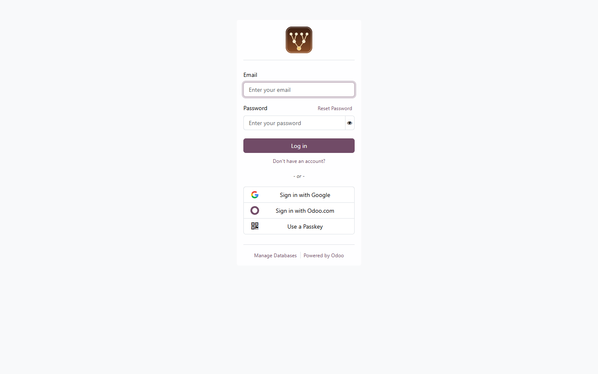
1.2 Mengenal menu utama
Menu utama berada di bilah hijau bagian atas:
| Menu | Fungsi |
|---|---|
| Dashboard | Ringkasan angka, grafik, tabel wilayah, peta sebaran anggota. |
| Anggota | Daftar semua orang dalam silsilah, formulir data, pohon silsilah. |
| Arsip | Foto, dokumen, video sejarah. |
| Berita & Agenda | Kabar dan acara yang tampil di aplikasi anggota. |
| Usulan | Usulan perubahan data dan Klaim Akun dari anggota. |
| Laporan | Hitung Partuturan, Direktori Keahlian. |
| Konfigurasi | Data master (Marga, Padan, Wilayah, Punguan, Bidang) dan kotak masuk moderasi. |
1.3 Menu pengguna dan Manual Book
Klik nama/foto Anda di pojok kanan atas untuk membuka menu pengguna. Di dalamnya ada (ubah bahasa, password, tanda tangan) dan (halaman ini), serta .
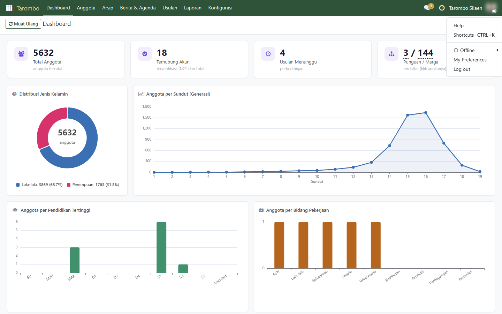
1.4 Keluar
Klik menu pengguna, lalu pilih . Selalu keluar bila memakai komputer bersama.
1.5 Kebiasaan umum di layar Odoo
| Elemen | Cara pakai |
|---|---|
| New | Membuat data baru (kiri atas). |
| Kotak Search… | Ketik kata kunci lalu tekan Enter. Klik panah kecil di kanan kotak untuk filter dan pengelompokan. |
| Ikon tampilan (kanan atas) | Berpindah antara daftar, grafik, pivot, atau kanban. |
| Ikon disket/awan ☁ | Menyimpan perubahan formulir (muncul di samping judul saat ada perubahan). Ikon × membatalkan perubahan. |
| Kolom Chatter (kanan formulir) | Send message = kirim pesan (terlihat oleh pengaju di aplikasi); Log note = catatan internal pengurus; Activity = jadwal tugas. |
2. Dashboard
Dashboard adalah halaman pertama setelah masuk. Gunakan untuk memantau kondisi data dan menuju ke daftar yang perlu ditindaklanjuti.
2.1 Kartu angka (KPI)
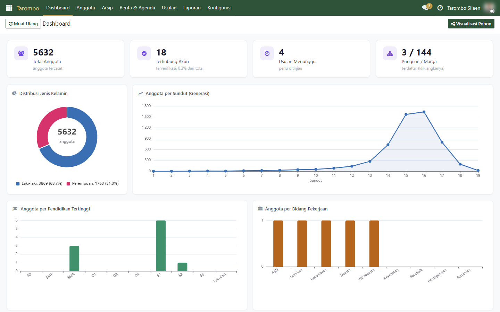
| Kartu | Arti dan aksi klik |
|---|---|
| Total Anggota | Jumlah orang dalam silsilah. Klik untuk membuka daftar Anggota. |
| Terhubung Akun | Jumlah anggota yang sudah terhubung dengan akun aplikasi dan terverifikasi, beserta persentasenya. Klik untuk melihat daftar anggotanya. |
| Usulan Menunggu | Usulan yang perlu ditinjau. Klik untuk langsung membuka daftar usulan berstatus Diajukan. |
| Punguan / Marga | Jumlah punguan dan marga terdaftar. Klik angkanya untuk membuka daftar masing-masing. |
2.2 Grafik
Gulir ke bawah untuk melihat grafik: Distribusi Jenis Kelamin, Anggota per Sundut, Anggota per Pendidikan Tertinggi, dan Anggota per Bidang Pekerjaan. Semua grafik bisa diklik:
- Klik potongan donat, titik garis, atau batang grafik.
- Daftar Anggota terbuka dengan filter yang sesuai (misalnya hanya sundut 16, atau hanya berpendidikan S1).
- Kembali ke dashboard lewat menu atau tautan di jejak navigasi (breadcrumb).
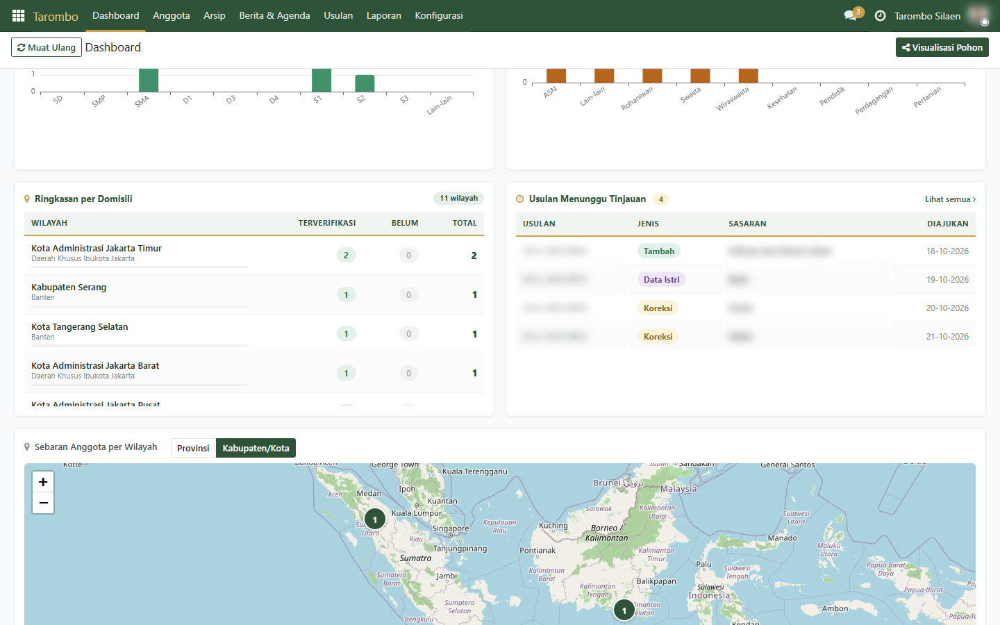
2.3 Tabel domisili dan peta sebaran
Bagian bawah menampilkan tabel wilayah (jumlah anggota per provinsi/kabupaten) dan peta sebaran.
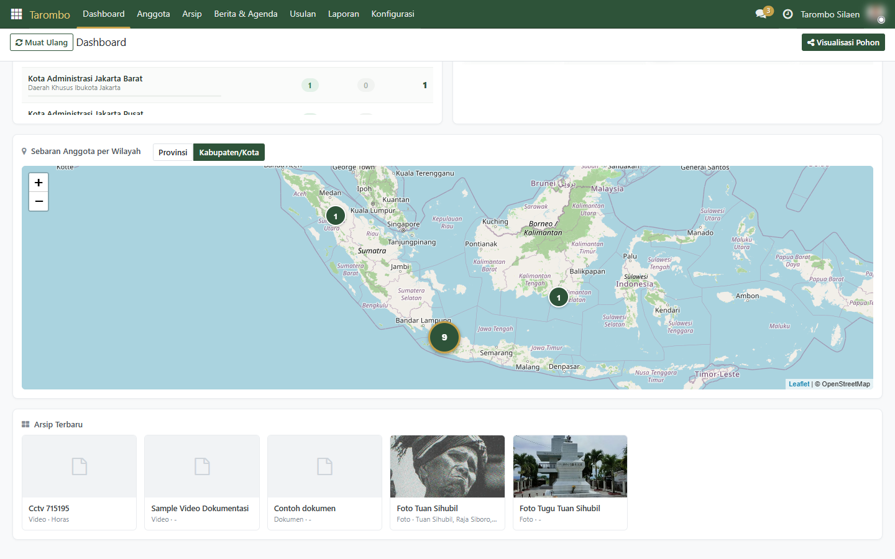
- Pilih tab Provinsi atau Kabupaten/Kota di atas peta untuk mengubah tingkat pengelompokan.
- Titik berangka adalah kelompok anggota: angkanya jumlah anggota di sekitar titik itu. Perbesar peta (tombol + atau gulir mouse) agar kelompok terurai.
- Klik sebuah titik. Muncul jendela info berisi nama wilayah dan tombol Lihat N anggota.
- Klik tombol itu untuk membuka daftar anggota di wilayah tersebut.
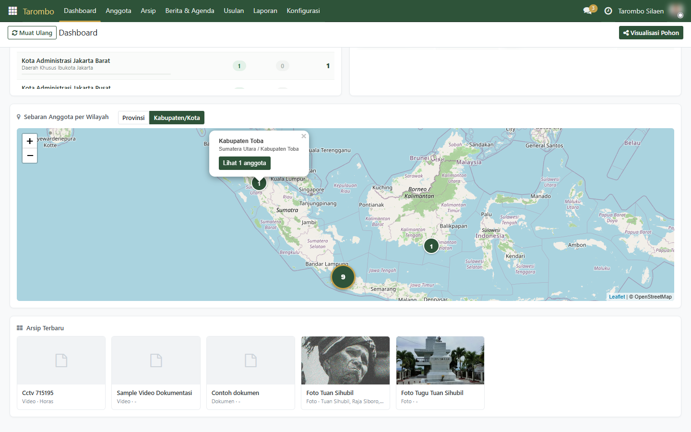
2.4 Visualisasi Pohon
Tombol hijau Visualisasi Pohon di kanan atas Dashboard membuka halaman penuh yang menampilkan silsilah sebagai jaringan interaktif.
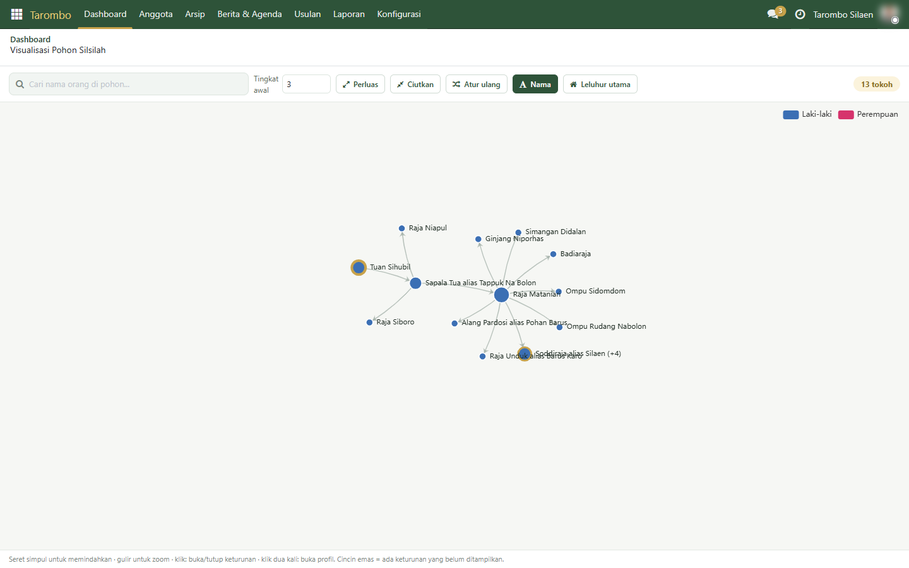
| Kontrol | Fungsi |
|---|---|
| Kotak Cari nama orang di pohon… | Ketik minimal beberapa huruf, pilih nama dari daftar; pohon berpindah fokus ke orang itu. |
| Tingkat awal | Kedalaman keturunan yang langsung ditampilkan saat membuka halaman. |
| Perluas / Ciutkan | Membuka semua cabang / menutup kembali ke tingkat awal. |
| Atur ulang | Menata ulang letak titik bila terlalu menumpuk. |
| Nama | Menampilkan / menyembunyikan label nama. |
| Leluhur utama | Kembali ke leluhur paling atas. |
- Seret latar untuk menggeser, gulir mouse untuk memperbesar/memperkecil.
- Klik sebuah titik untuk membuka/menutup keturunannya. Klik dua kali untuk membuka profilnya. Titik bercincin emas berarti masih ada keturunan yang belum ditampilkan.
- Biru = laki-laki, merah muda = perempuan.
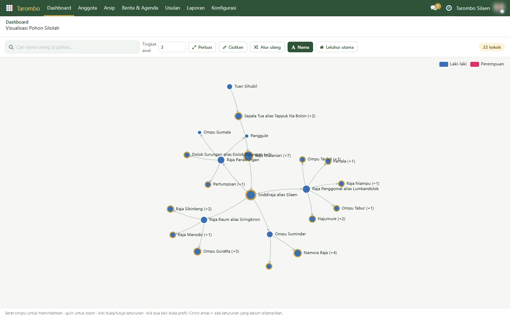
3. Anggota (data orang)
Menu berisi seluruh data orang dalam silsilah.
3.1 Melihat dan mencari anggota
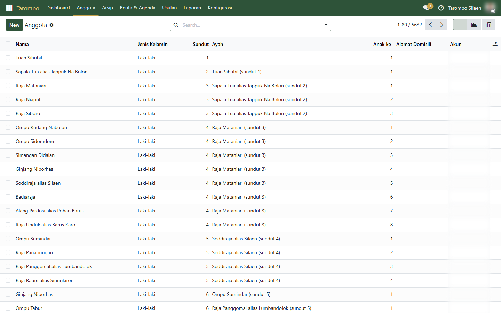
- Klik menu . Daftar menampilkan Nama, Jenis Kelamin, Sundut, Ayah, Anak ke-, Alamat Domisili, dan Akun.
- Ketik nama di kotak Search… lalu tekan Enter.
- Klik baris untuk membuka formulir lengkap orang tersebut.
- Gunakan panah < > di kanan atas untuk berpindah halaman (80 baris per halaman).
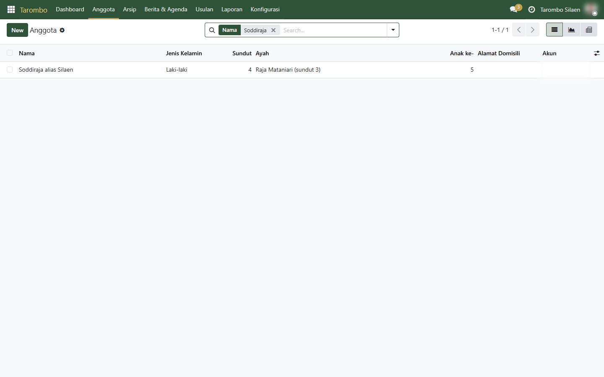
3.2 Filter dan pengelompokan
Klik panah kecil di sisi kanan kotak pencarian untuk membuka menu Filters dan Group By (misalnya kelompokkan per Sundut, Punguan, atau Jenis Kelamin).
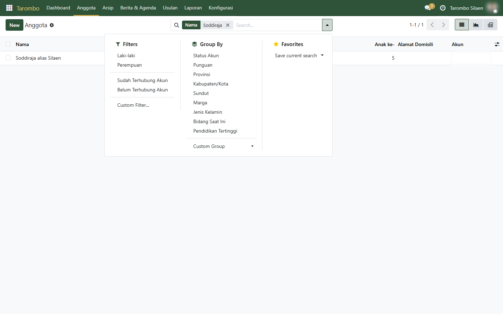
3.3 Tampilan alternatif
Tiga ikon di kanan atas mengubah cara melihat data: Daftar, Grafik, dan Pivot (tabel ringkasan).
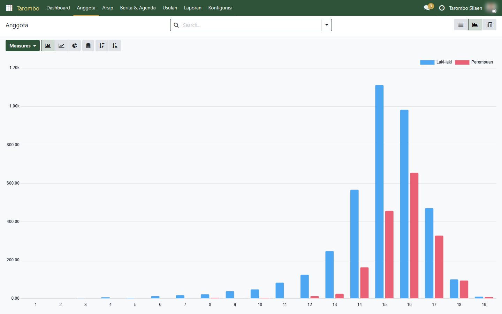
3.4 Formulir anggota
Formulir dibagi dalam enam tab. Bagian atas formulir selalu menampilkan Nama, Jenis Kelamin, Sundut, dan foto.
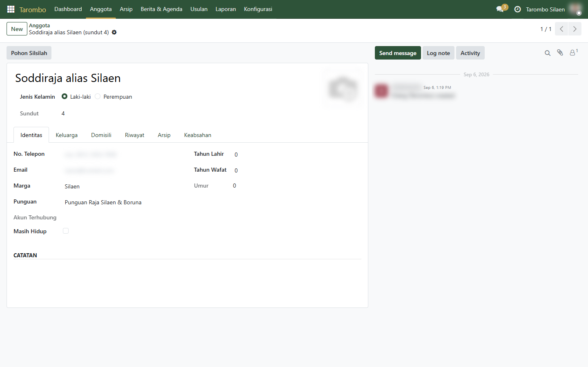
Tab Identitas
No. Telepon, Email, Marga, Punguan, Tahun Lahir/Wafat, Umur, Masih Hidup, serta kolom Akun Terhubung (terisi otomatis bila anggota sudah klaim akun, tidak diubah manual) dan Catatan. Data kontak hanya terlihat oleh pengurus.
Tab Keluarga
Berisi Ayah, Dari istri ke-, Nama/Marga Ibu, Anak ke-, Putra ke-, Jumlah Saudara, dan tabel Pernikahan (Istri ke-, Nama Istri, Marga Istri, Tahun, Anak, dan Pemeriksaan Adat).
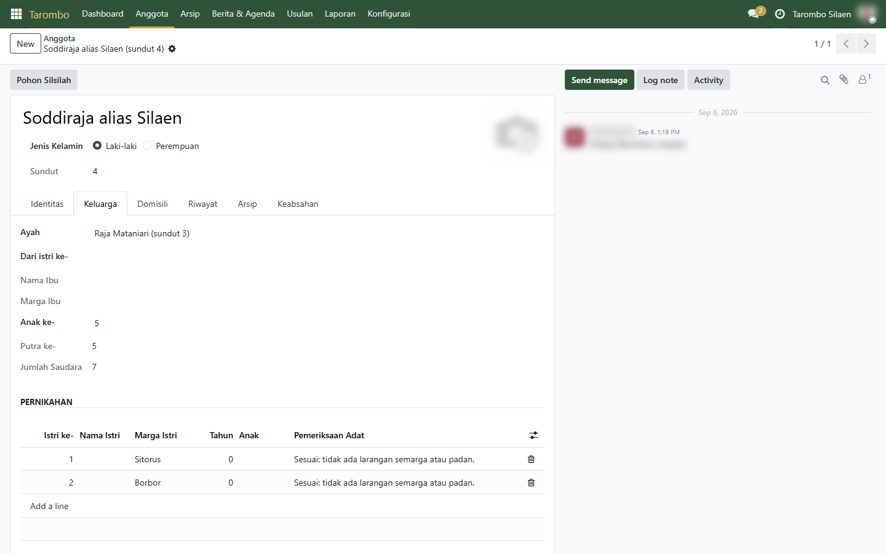
Tab Domisili
Alamat jalan, kode pos, wilayah (provinsi/kabupaten), serta titik lokasi pada peta. Isian wilayah dipakai peta di Dashboard.
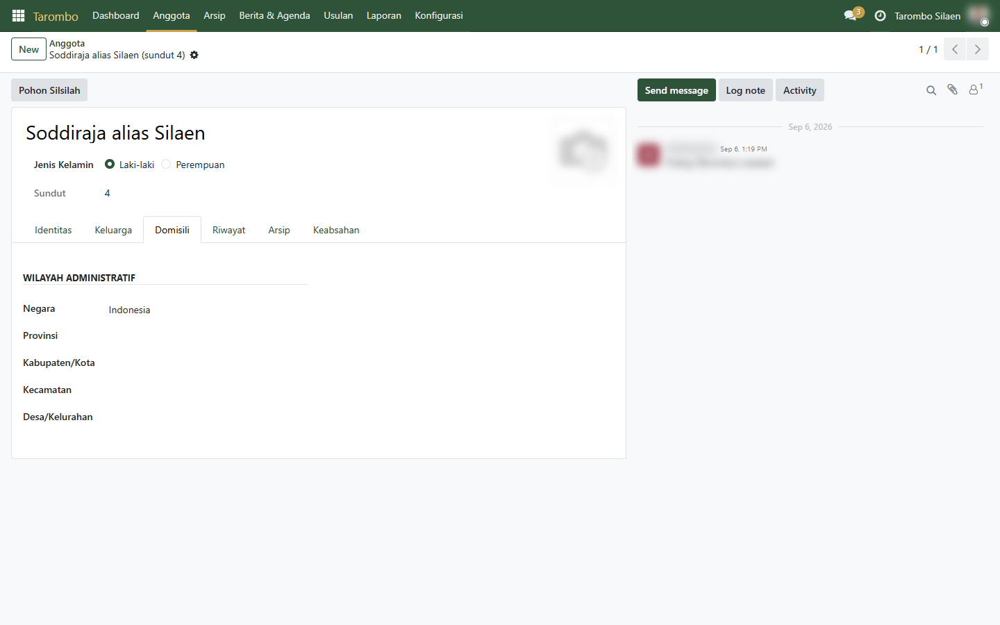
Tab Riwayat
Riwayat pendidikan dan pekerjaan. Dipakai oleh Direktori Keahlian.
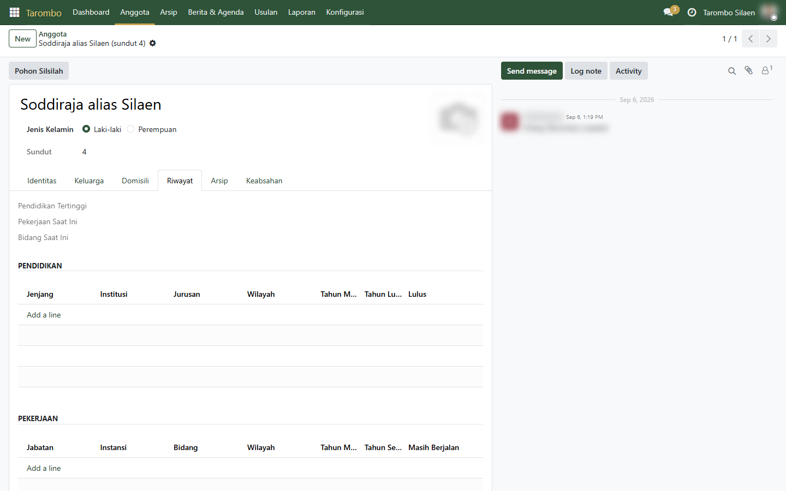
Tab Arsip
Daftar arsip (foto/dokumen/video) yang terkait dengan orang ini.
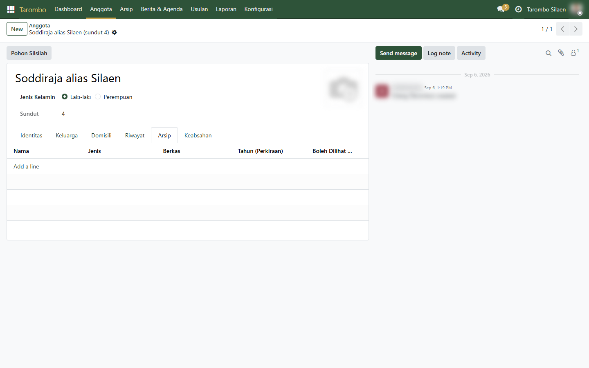
Tab Keabsahan
Berisi Status (misalnya Terverifikasi atau belum), Sumber Keterangan, dan tanda Lengkap (otomatis, bergantung pada kelengkapan data).
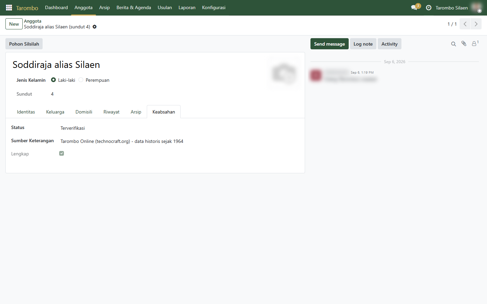
3.5 Mengubah data anggota
- Buka formulir anggota (3.1).
- Klik kolom yang ingin diubah, lalu ketik nilai baru.
- Klik ikon ☁ (simpan) di samping judul formulir. Untuk membatalkan, klik ×.
3.6 Menambah anggota baru
- Di daftar Anggota klik New.
- Isi Nama dan pilih Jenis Kelamin.
- Buka tab Keluarga dan pilih Ayah. Sundut terisi otomatis dari ayah. Isi Marga di tab Identitas.
- Isi data lain yang diketahui, lalu klik ikon simpan.
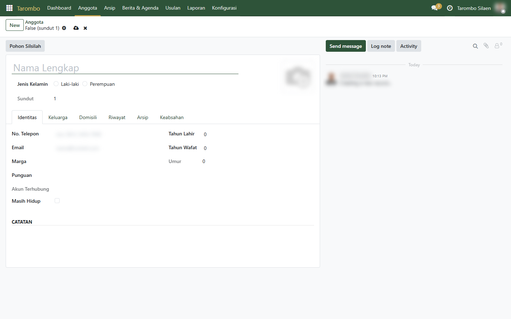
3.7 Menambah istri atau anak lewat tab Keluarga
- Buka formulir ayah lalu tab Keluarga.
- Di tabel Pernikahan klik Add a line untuk menambah istri: isi Nama Istri, Marga Istri, dan tahun bila ada.
- Klik ikon simpan. Nama istri beserta marganya (mis. Agnes br. Gultom) akan tampil di bawah nama pada kartu pohon dan profil di aplikasi.
3.8 Pohon Silsilah
Dari formulir anggota, klik tombol Pohon Silsilah (kiri atas formulir) untuk membuka pohon bergambar mulai dari orang tersebut.
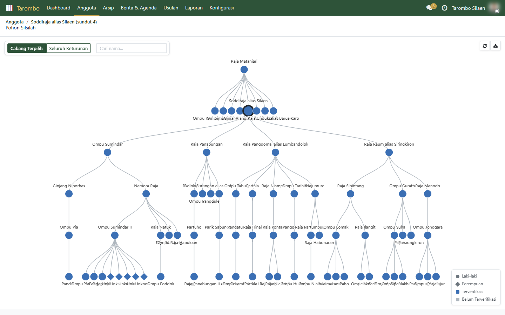
- Cabang Terpilih hanya menampilkan garis dari leluhur ke orang tersebut; Seluruh Keturunan menampilkan semua turunan.
- Kotak Cari nama… menyorot nama di pohon. Ikon ↻ memuat ulang dan ikon ⬇ mengunduh gambar pohon.
- Legenda (kanan bawah): lingkaran = laki-laki, belah ketupat = perempuan, biru = terverifikasi, abu-abu = belum.
4. Arsip
Menu menyimpan foto, dokumen, dan video sejarah. Arsip yang ditandai Boleh Dilihat Seluruh Anggota tampil di aplikasi.
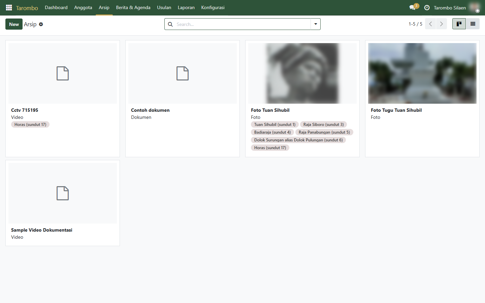
4.1 Membuka dan memeriksa arsip
- Klik kartu arsip.
- Formulir menampilkan Jenis, Berkas (ikon pensil = ganti, panah = unduh, tempat sampah = hapus), Tahun (Perkiraan), Sumber, dan Orang Terkait.
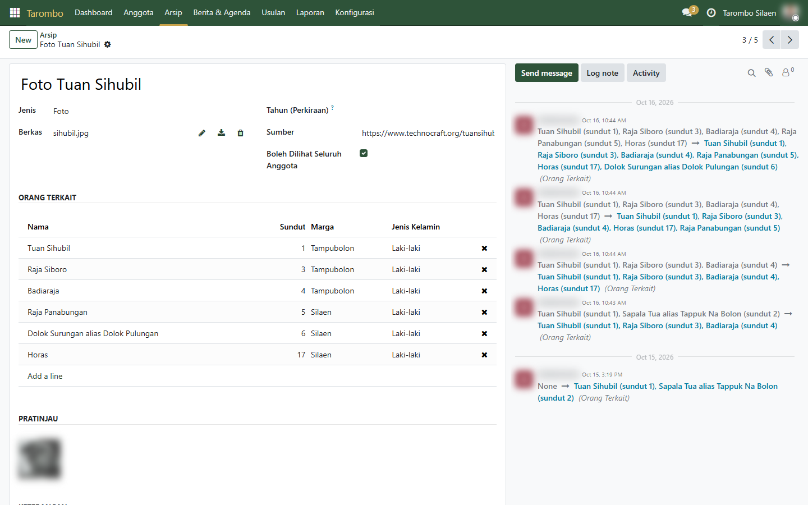
4.2 Menambah arsip baru
- Klik New di menu Arsip.
- Isi judul, pilih Jenis, lalu unggah Berkas.
- Isi Sumber dan Tahun (Perkiraan) bila diketahui.
- Di Orang Terkait klik Add a line dan pilih orang yang ada pada arsip tersebut. Arsip akan muncul pada tab Arsip orang itu.
- Centang Boleh Dilihat Seluruh Anggota bila boleh dilihat anggota; kosongkan bila hanya untuk pengurus.
- Simpan.
5. Berita & Agenda
Menu dipakai untuk mengumumkan kabar dan acara kepada anggota di aplikasi.
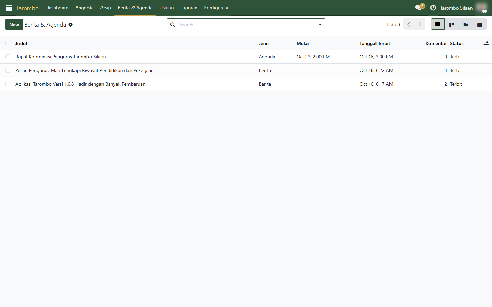
Ikon di kanan atas mengganti tampilan: Daftar, Kanban (kartu dikelompokkan per status Draft/Terbit), Grafik, dan Pivot (ringkasan jumlah).
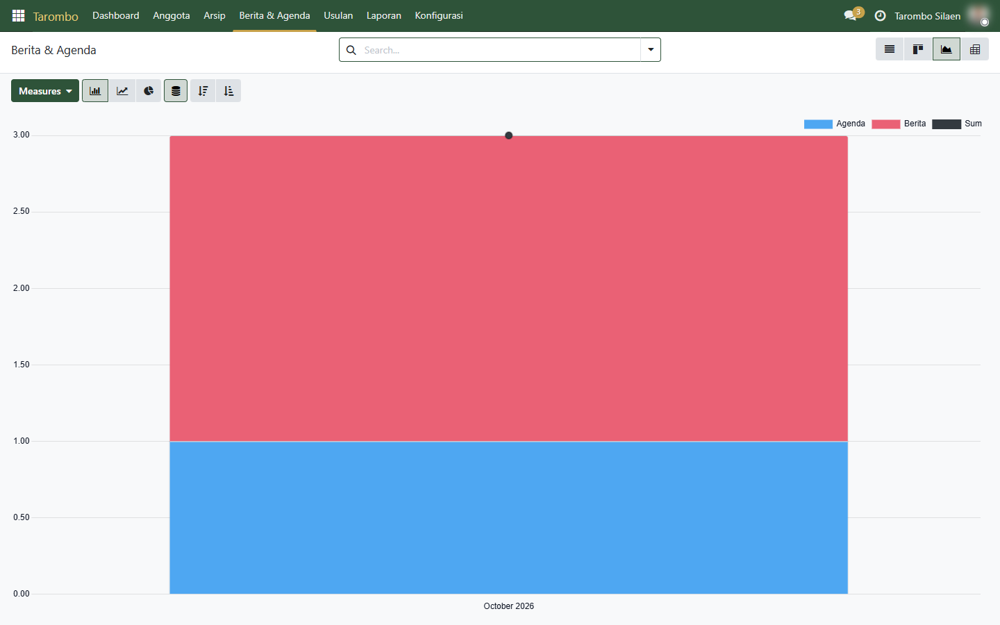
5.1 Menulis dan menerbitkan
- Klik lalu New.
- Isi Judul. Pilih Jenis: Berita atau Agenda.
- Isi Ringkasan (tampil di beranda aplikasi — buat singkat dan menarik) dan Isi (teks lengkap; boleh menyisipkan gambar).
- Klik ikon simpan. Status awal adalah Draft (belum terlihat anggota).
- Periksa sekali lagi, lalu klik Terbitkan. Status berubah menjadi Terbit dan tanggal terbit tercatat.
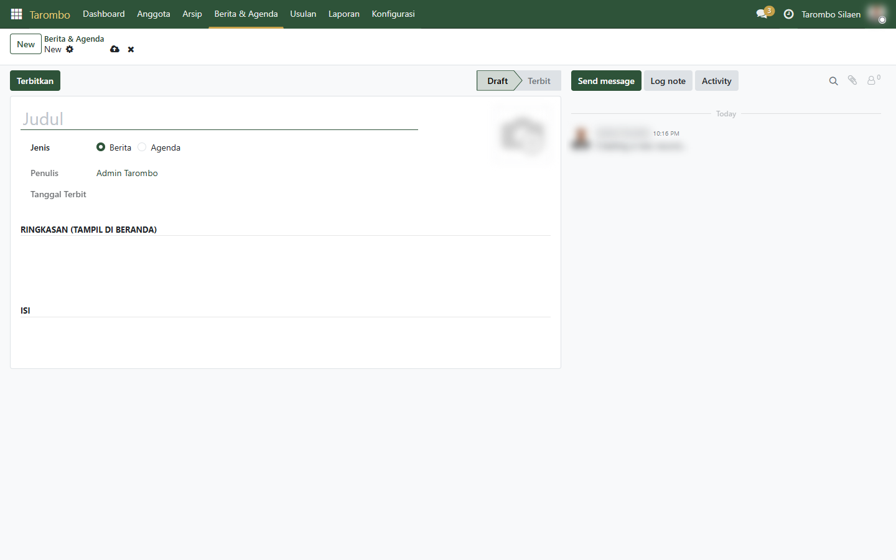
5.2 Menarik kembali
Bila ada kesalahan, buka beritanya dan klik Tarik ke Draft agar tidak lagi terlihat anggota, perbaiki, lalu terbitkan lagi.
6. Usulan dan Klaim Akun
Ini tugas utama pengurus: meninjau permintaan dari anggota sebelum data berubah. Angka Usulan Menunggu di Dashboard menunjukkan jumlah yang perlu ditinjau.
6.1 Daftar Usulan
Buka . Usulan dikelompokkan menurut status: Draft, Diajukan (menunggu tinjauan), dan Disetujui. Klik judul kelompok Diajukan untuk membukanya.
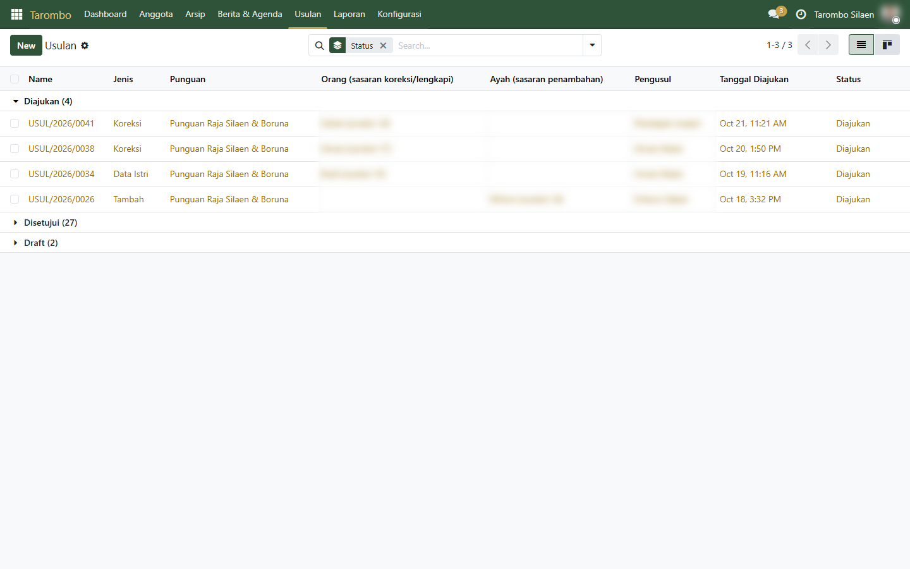
| Jenis usulan | Arti |
|---|---|
| Tambah | Menambahkan anak/orang baru di bawah seorang ayah. |
| Koreksi | Memperbaiki data orang yang sudah ada. |
| Lengkapi | Melengkapi data yang masih kosong. |
| Data Istri | Menambahkan atau melengkapi data istri (nama dan marga) pada seorang suami. |
6.2 Meninjau satu usulan
- Buka usulan berstatus Diajukan dengan mengklik barisnya.
- Baca bagian Sasaran (orang atau ayah yang dituju) dan Muatan Usulan (nama, jenis kelamin, anak ke-, data istri, kontak, dan seterusnya).
- Baca Sumber Keterangan serta lampiran foto/bukti (ikon klip kertas di kanan atas).
- Cocokkan dengan data yang ada di Anggota. Bila perlu, tanyakan ke pengaju lewat Send message — pesan ini terlihat oleh pengaju di aplikasi. Gunakan Log note untuk catatan internal.
- Ambil keputusan: Setujui atau Tolak.
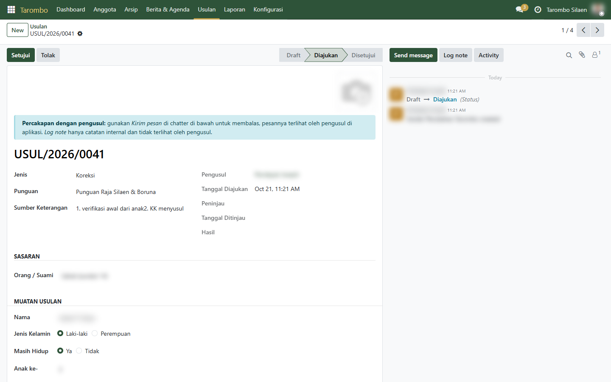
6.3 Menyetujui
- Klik Setujui.
- Data langsung diterapkan: orang baru dibuat atau data orang yang ada diperbarui. Status menjadi Disetujui, nama peninjau dan tanggal tinjau tercatat, dan Hasil terisi.
- Pengaju mendapat pemberitahuan di aplikasi, dan jejak asal-usul usulan dicatat di chatter data orang tersebut.
6.4 Menolak
- Klik Tolak.
- Pada jendela Alasan Penolakan tulis alasan yang sopan, jelas, dan membantu (mis. "Data ayah belum sesuai catatan punguan, mohon sertakan sumber"). Alasan wajib diisi dan dibaca oleh pengaju.
- Klik Tolak untuk menyimpan, atau Batal untuk kembali.
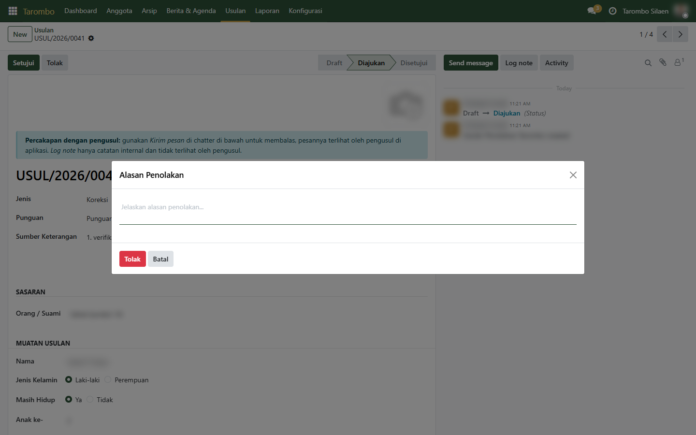
6.5 Klaim Akun
Anggota yang mendaftar di aplikasi harus mengklaim satu nama di pohon sebagai dirinya. Klaim ini harus diverifikasi pengurus supaya orang lain tidak bisa mengaku sebagai anggota keluarga Anda.
Buka .
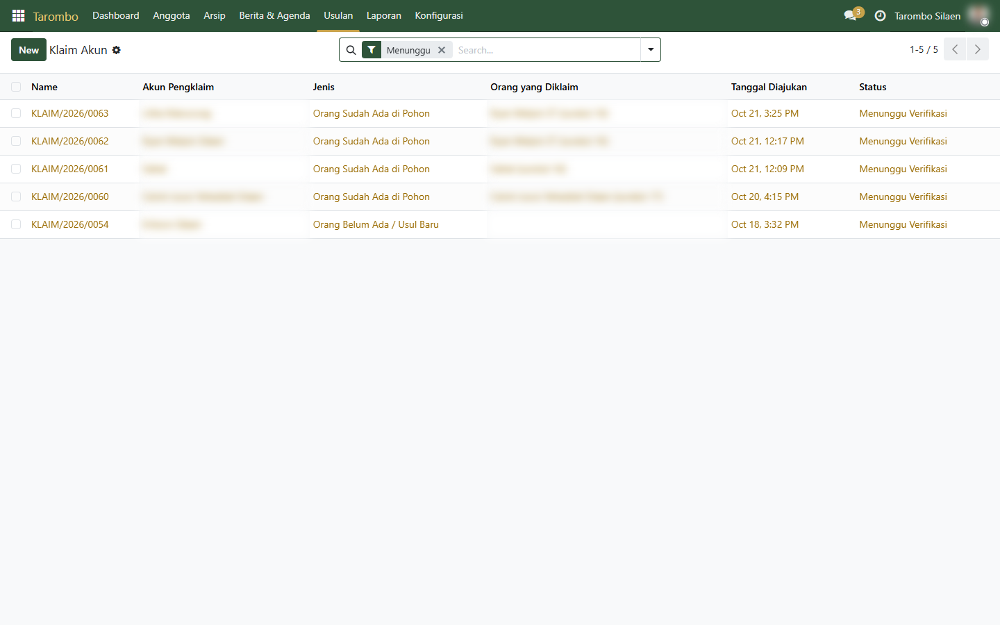
- Klik klaim berstatus Menunggu Verifikasi.
- Periksa Akun Pengklaim, Jenis (Orang Sudah Ada di Pohon atau orang baru), dan Orang yang Diklaim, lalu baca Keterangan Pengklaim dan Bukti Pendukung.
- Pastikan benar-benar orang yang sama, misalnya hubungi pengklaim lewat Send message atau konfirmasi ke kerabat/pengurus punguan. Tanyakan nama ayah/kakek bila perlu.
- Klik Setujui bila yakin. Akun pengguna dihubungkan ke nama tersebut (kolom Akun Terhubung di data anggota terisi, dan angka Terhubung Akun di Dashboard bertambah).
- Klik Tolak bila tidak sesuai. Tulis alasan agar pengklaim dapat memperbaiki atau mengajukan ulang.
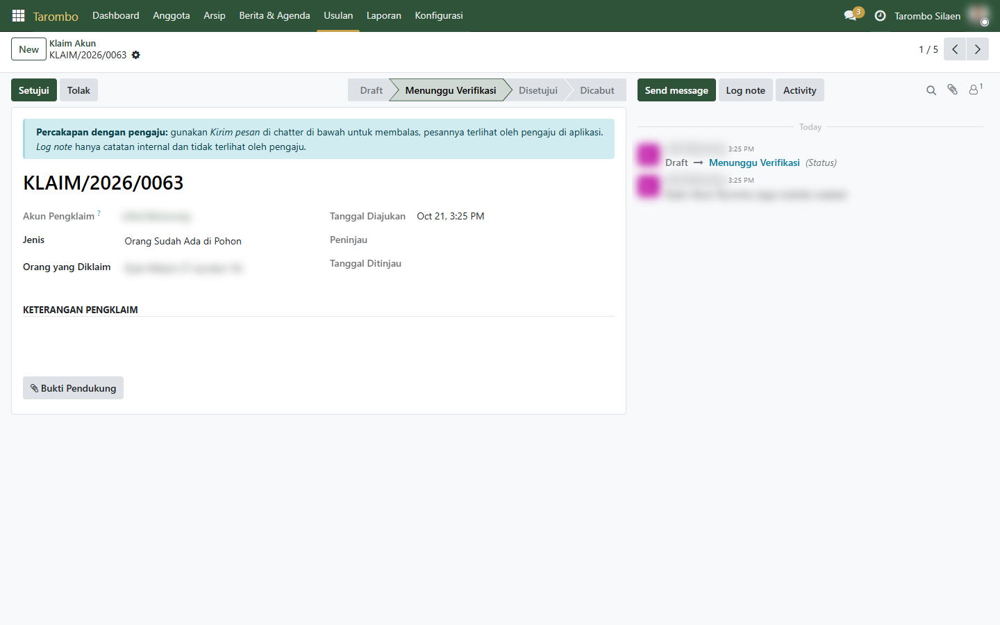
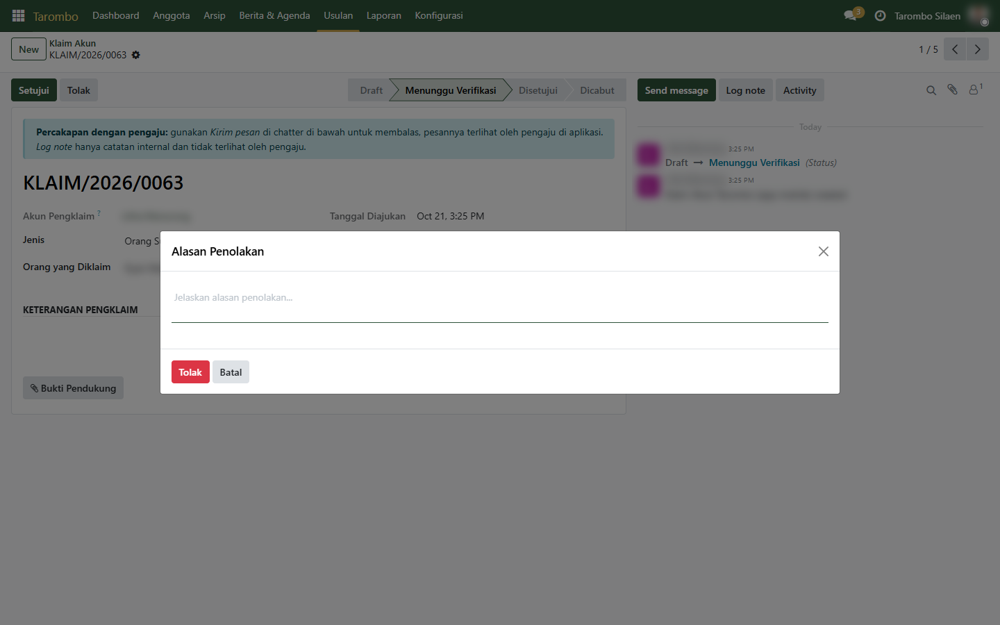
7. Laporan
7.1 Hitung Partuturan
Alat untuk menentukan sebutan kekerabatan antara dua orang berdasarkan silsilah, lengkap dengan pohon penjelasan bergambar. Berguna untuk menjawab pertanyaan anggota atau memeriksa hasil yang dipertanyakan.
- Klik . Jendela perhitungan terbuka.
- Pada Orang A, ketik sebagian nama lalu pilih dari daftar. Daftar menampilkan nama, sundut, dan nama ayah supaya mudah membedakan orang bernama sama. Bila tidak ketemu, klik Search More… untuk pencarian lanjut.
- Pilih Orang B dengan cara yang sama.
- Klik Hitung.
- Baca hasilnya di bagian Pohon Penjelasan, kotak hijau sebutan, dan tabel Hasil.
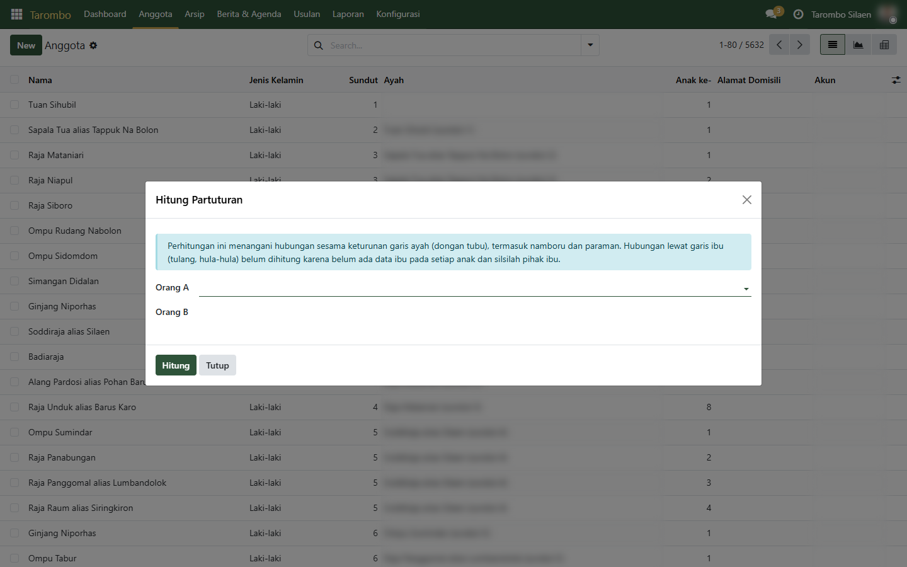
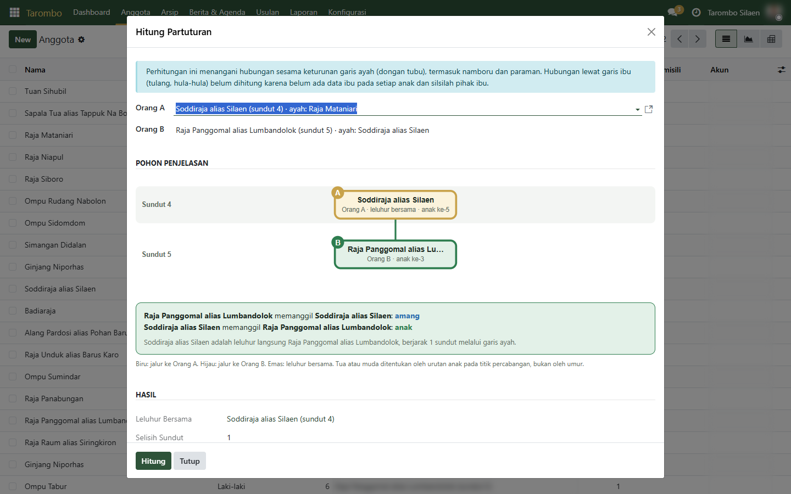
Cara membaca hasil
- Pohon penjelasan: garis biru = jalur ke Orang A, hijau = jalur ke Orang B, emas = leluhur bersama. Penanda A dan B menunjukkan kedua orang.
- Kotak hijau: "A memanggil B: …" dan "B memanggil A: …", disertai penjelasan hubungan (misalnya leluhur langsung, berjarak 1 sundut).
- Tua atau muda ditentukan oleh urutan anak pada titik percabangan, bukan umur. Karena itu isian Anak ke- harus benar.
- Tabel Hasil menunjukkan leluhur bersama, selisih sundut, dan keterangan tambahan. Gulir ke bawah di jendela bila perlu.
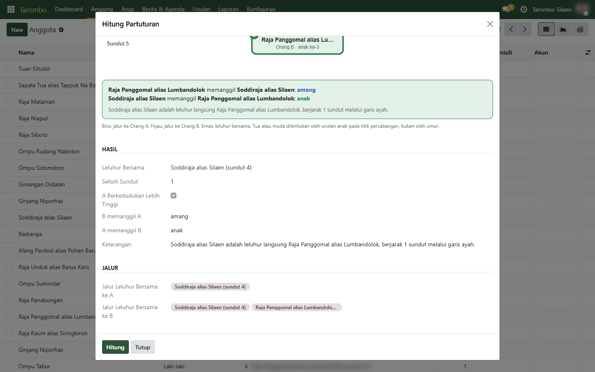
7.2 Direktori Keahlian
Daftar anggota beserta pekerjaan, pendidikan, dan wilayahnya, untuk mencari tenaga ahli di lingkungan marga (misalnya dokter, notaris, atau guru).
- Klik .
- Cari berdasarkan nama, bidang, atau pekerjaan di kotak pencarian, atau gunakan filter/pengelompokan (mis. per Bidang atau per Wilayah).
- Klik baris untuk membuka data anggotanya.
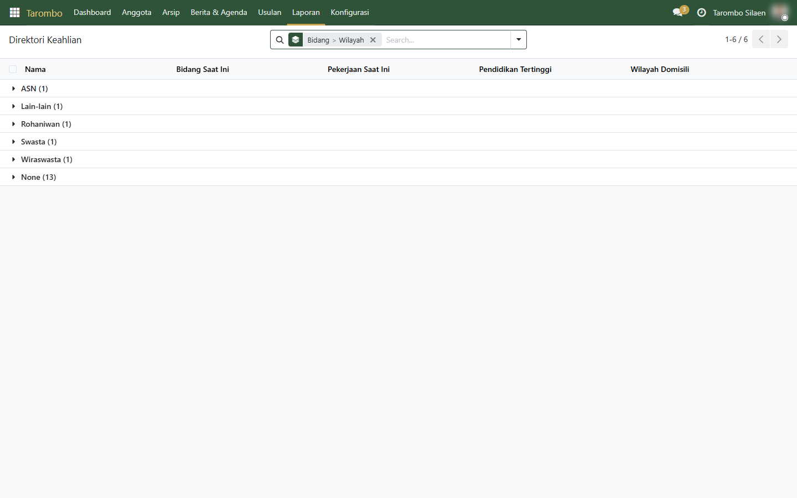
8. Konfigurasi
Berisi data master dan kotak masuk moderasi. Perubahan di sini berdampak ke seluruh data, ubah dengan hati-hati.
8.1 Data master
| Menu | Fungsi |
|---|---|
| Marga | Daftar marga (Silaen, Tampubolon, Gultom, dst), dipakai pada data anggota dan marga istri. |
| Padan | Ikatan janji antar-marga, dipakai pada pemeriksaan adat saat menambah pernikahan. |
| Wilayah | Provinsi dan kabupaten/kota, dipakai pada domisili dan peta. |
| Punguan | Perkumpulan marga beserta wilayahnya. |
| Bidang | Bidang pekerjaan (ASN, Wiraswasta, Kesehatan, Pendidik, dst) untuk grafik dan Direktori Keahlian. |
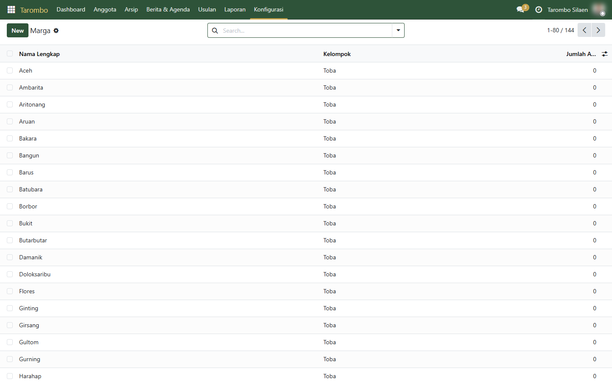
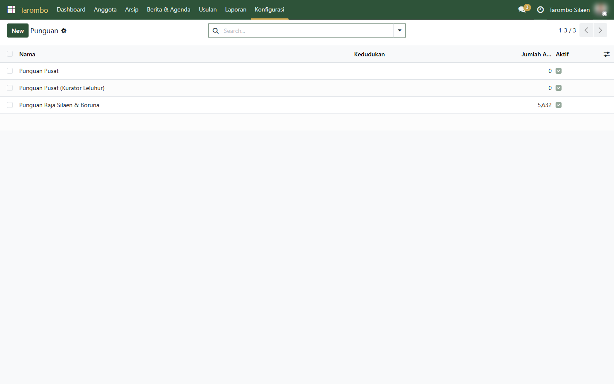
- Buka menu master yang diinginkan lewat .
- Untuk menambah, klik New, isi kolom, lalu simpan.
- Untuk mengubah, klik baris, ubah isian, lalu simpan.
8.2 Laporan Konten (moderasi komentar)
Anggota dapat melaporkan komentar yang tidak pantas pada berita. Buka . Laporan baru berstatus Baru.
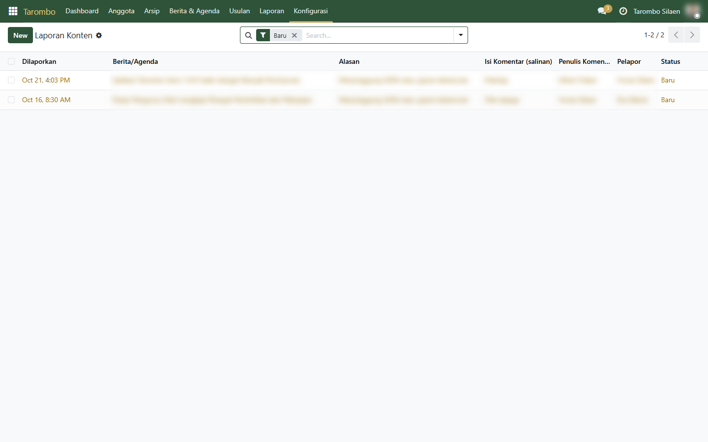
- Klik laporan untuk melihat berita, alasan pelapor, serta salinan isi komentar.
- Klik Buka Berita bila perlu melihat konteks.
- Bila komentar melanggar, klik Hapus Komentar.
- Bila laporan tidak beralasan, klik Abaikan Laporan.
8.3 Masukan Pengguna
Kritik, saran, atau kendala yang dikirim anggota dari aplikasi. Buka .
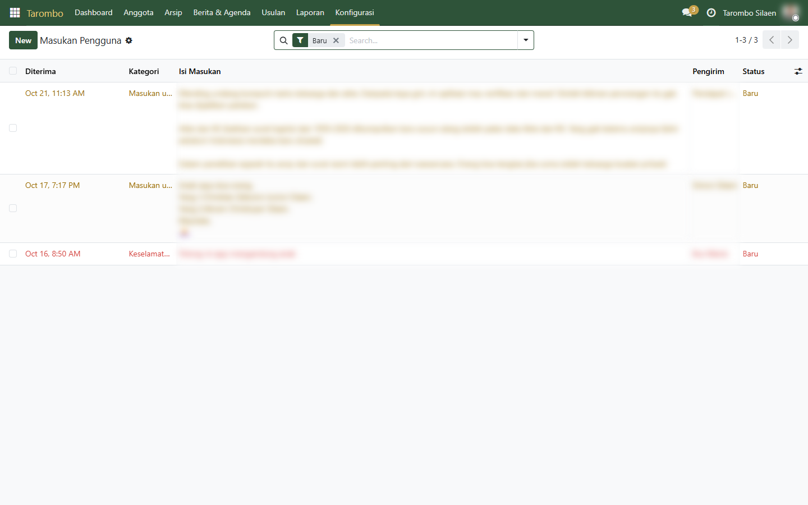
- Baca masukan dan kategorinya.
- Tindak lanjuti (perbaiki data, jawab, atau teruskan ke pengembang).
- Klik Tandai Ditangani agar tidak menumpuk.
8.4 Permintaan Hapus Akun
Sesuai kebijakan privasi dan aturan toko aplikasi, anggota dapat meminta akunnya dihapus dari aplikasi. Permintaan masuk ke dengan status Menunggu Diproses.
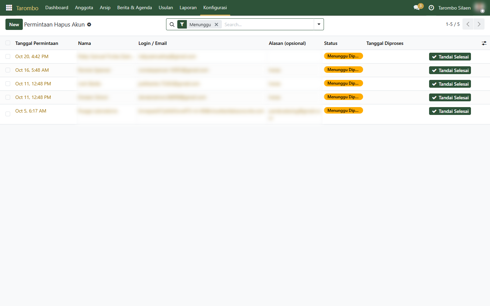
- Buka permintaan dan periksa identitas pemohon.
- Hapus/nonaktifkan akun penggunanya sesuai prosedur admin sistem (data silsilah milik keluarga tidak ikut dihapus). Tombol di bawah hanya mencatat status, tidak menghapus akun secara otomatis.
- Setelah akun diproses, klik Tandai Sudah Diproses (atau Tandai Selesai di daftar). Status menjadi Sudah Diproses dan tanggal proses tercatat.
9. Praktik terbaik pengurus
| Rutinitas | Saran |
|---|---|
| Harian / tiap beberapa hari | Cek Usulan Menunggu di Dashboard dan proses klaim akun baru. Respons cepat membuat anggota betah memakai aplikasi. |
| Mingguan | Periksa Laporan Konten dan Masukan Pengguna. Terbitkan berita/agenda yang relevan. |
| Bulanan | Lihat Dashboard untuk persentase anggota terhubung akun; tinjau sebaran peta dan lengkapi domisili yang masih kosong. |
- Verifikasi sebelum menyetujui: cocokkan dengan sumber yang dapat dipercaya (catatan punguan, kerabat terdekat, dokumen).
- Jelaskan setiap penolakan dengan bahasa yang santun.
- Jangan menghapus data anggota. Bila ada kekeliruan, koreksi datanya. Hapus hanya untuk duplikat yang jelas, dan setelah dikonfirmasi pengurus lain.
- Konsistenkan penulisan nama: gunakan ejaan yang disepakati punguan, tulis marga istri pada kolom Marga Istri (bukan di nama).
- Lindungi data pribadi: jangan menyalin kontak anggota ke luar sistem; jangan menyebar tangkapan layar yang memuat data kontak.
10. Tanya jawab dan pemecahan masalah
Saya tidak melihat menu tertentu (mis. Konfigurasi).
Menu tampil sesuai hak akses. Pastikan akun Anda bergabung ke grup Pengurus Tarombo. Hubungi admin sistem bila perlu.
Tombol Setujui/Tolak tidak muncul pada usulan.
Tombol hanya muncul pada usulan berstatus Diajukan. Usulan Draft belum dikirim pengaju; usulan Disetujui sudah selesai.
Hasil partuturan terasa tidak sesuai.
Periksa dulu data pada pohon penjelasan: apakah Ayah dan Anak ke- kedua orang (dan leluhur di percabangan) sudah benar. Sebutan tua/muda mengikuti urutan anak, bukan umur. Bila data sudah benar tetapi hasil dipertanyakan, catat nama kedua orang dan hasilnya, lalu sampaikan ke pengembang.
Orang yang dicari tidak ada di daftar pencarian partuturan.
Ketik lebih banyak huruf, atau klik Search More…. Bila memang belum ada, tambahkan lewat Anggota atau minta anggota mengusulkan.
Peta tidak menampilkan titik untuk anggota tertentu.
Pastikan tab Domisili anggota sudah diisi wilayahnya (provinsi/kabupaten). Peta memakai isian wilayah itu.
Angka di Dashboard belum berubah setelah saya menyimpan data.
Klik tombol Muat Ulang di kiri atas Dashboard.
Saya tidak sengaja menyetujui usulan yang salah.
Buka data anggota yang terkait dan koreksi manual (tab Keluarga/Identitas). Catat alasannya lewat Log note pada usulan. Jangan menghapus orang yang sudah dihubungkan akun.
Halaman terasa lambat atau tampilan aneh setelah pembaruan sistem.
Muat ulang paksa peramban dengan Ctrl + F5 (Windows) atau Cmd + Shift + R (Mac).
Kepada siapa saya melapor bila ada masalah teknis?
Hubungi admin sistem/pengembang Tarombo. Sertakan tangkapan layar (tanpa data pribadi) dan langkah yang Anda lakukan.